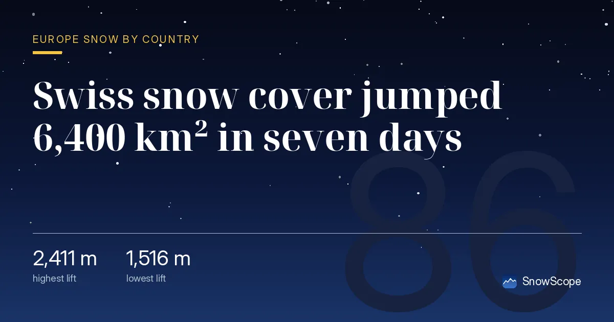
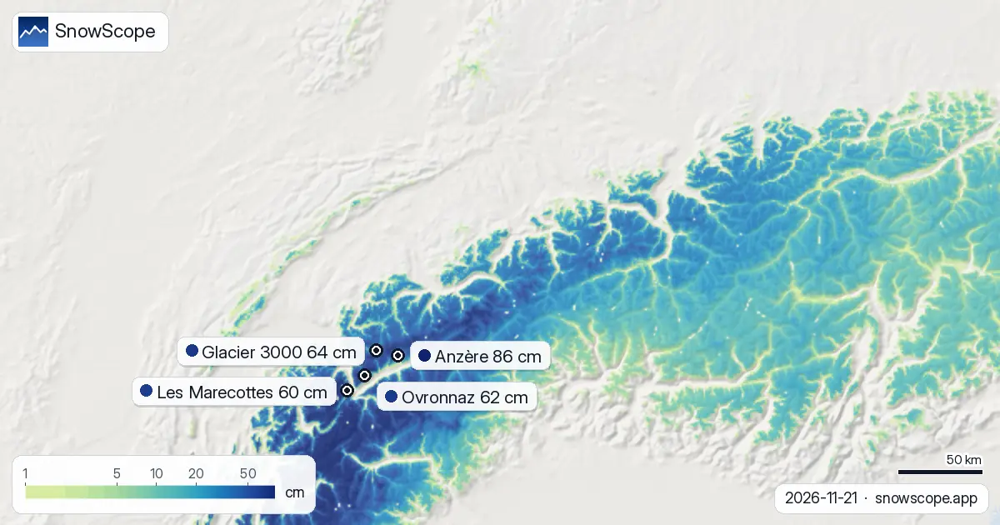

La copertura nevosa svizzera è aumentata di 6.400 km² in sette giorni
In soli sette giorni, le montagne svizzere hanno guadagnato 6.410 km² di copertura nevosa—un aumento del 48 percento rispetto a una settimana fa. I dati satellitari mostrano che le Alpi sono ora coperte al 64 percento, con la neve fresca degli ultimi tre giorni che ha spinto la copertura più in alto a tutte le quote.
Le previsioni neve in tempo reale per Anzère nell'app SnowScopeAltezza neve, allerte powder e mappa 3D, gratis.
Come la settimana si è sviluppata
La crescita è stata costante e ripida. Domenica scorsa, 21 novembre, 13.470 km² dei 31.030 km² dell'area di studio della Svizzera erano ricoperti di neve. Oggi quella cifra è di 19.880 km² coperti. Ogni giorno di questa settimana ha aggiunto più terreno bianco, con il picco intorno al 20 novembre quando la neve fresca della finestra di settantadue ore ha raggiunto 99 cm nelle zone più alte.
Questo aumento segna una piega netta rispetto all'inizio di novembre. La prima vera neve è entrata nel sistema solo il 22 novembre secondo il nostro modello, quindi siamo nella fase iniziale della stagione. Detto questo, l'accumulo della scorsa settimana suggerisce che lo schema si è fissato: l'aria fredda sta ora stazionando sugli alti rilievi.
| Day | White area | Most new snow in 3 days | Deepest resort |
|---|---|---|---|
| lunedì 16 novembre | 16.510 km² | 22 cm | Ovronnaz |
| martedì 17 novembre | 14.750 km² | 45 cm | Zermatt |
| mercoledì 18 novembre | 16.060 km² | 64 cm | Glacier 3000 |
| giovedì 19 novembre | 18.160 km² | 83 cm | Glacier 3000 |
| venerdì 20 novembre | 19.900 km² | 99 cm | Glacier 3000 |
| sabato 21 novembre | 19.880 km² | 81 cm | Anzère |

Dove si trova la neve oggi
La linea della neve si trova ora attorno ai 1.200 m di quota. Al di sotto di essa, la copertura è scarsa—solo il 4 percento della zona tra 500 m e 1.000 m presenta neve, e le profondità sono in media zero. La vera neve inizia a 1.000 m, dove il 61 percento della banda è coperto con una profondità media di 3 cm. Da 1.500 m in su, la copertura è quasi completa: a 1.500–2.000 m la profondità media è di 11 cm con una copertura del 98 percento; al di sopra dei 2.000 m, la neve è spessa e ininterrotta.
Nel settore più alto sopra i 2.500 m, le profondità medie raggiungono 30 cm sull'intera area bianca al 100 percento. Qui si trova la maggior parte del terreno per gli sci glaciali e d'alta quota della Svizzera, quindi le corse di inizio stagione sono già plausibili nel vertice della rete.

I leader regionali
Due regioni hanno superato il resto. Le Alpi del Vallese, casa di Anzère, Zermatt e Ovronnaz, hanno ricevuto 164 cm nelle ultime settantadue ore—il totale più alto che misuriamo. L'Oberland bernese, dove opera Glacier 3000, ha aggiunto 115 cm nella stessa finestra.
Anzère guida oggi con 86 cm nel suo punto misurato, seguita da Ovronnaz con 62 cm e Zermatt con 60 cm. Tutti e tre si trovano ben al di sopra della loro profondità tipica di metà novembre; Anzère è al 338 percento della norma per questa data. Glacier 3000, con 64 cm, ha accumulato 98 cm in tre giorni e si attesta al 308 percento della norma—un segno che la zona glaciale alta sta catturando umidità dai sistemi che spingono da nord-ovest.
Ciò che è caduto e cosa viene dopo
Nelle ultime ventiquattro ore sole, le zone più alte hanno ricevuto 16 cm di neve fresca. Negli ultimi tre giorni, parti delle Alpi del Vallese hanno visto accumulare 164 cm, mentre aree più ampie al di sopra dei 2.000 m hanno registrato una media di circa 81 cm su tutta la Svizzera. Questa è una spinta pesante di tre giorni per fine novembre.
Le previsioni non mostrano segni di rallentamento. Domani, 22 novembre, prevediamo il giorno più pesante: fino a 40 cm nelle zone di vetta. Nei prossimi tre giorni, le montagne alte potrebbero vedere altri 59 cm in aggiunta a ciò che è caduto questa settimana. Entro la fine di novembre, le nostre previsioni più lunghe suggeriscono una settimana due più tranquilla, ma i prossimi sette giorni dovrebbero portare circa 74 cm in più alle cime alte.
Trend sulle Alpi questa settimana
L'Austria confinante ha visto un'attività simile ma di minore intensità: il 56 percento di copertura nevosa con 35 cm previsti per la prossima settimana. La Francia è in un pattern diverso—solo il 14 percento di terreno bianco nella nostra area di studio, anche se la regione di Orelle nelle Alpi alte ha catturato 136 cm e ne mostra 92 in avanti. I sistemi stanno tracciando attraverso l'arco svizzero con la massima intensità.
L'incertezza in tutte queste previsioni rimane reale. La neve di inizio stagione è sottile dove è appena atterrata, e in alcune zone di media quota—tra 1.000 m e 1.500 m—le rocce possono ancora spuntare dalla superficie. Consulta il bollettino ufficiale delle valanghe prima di qualsiasi avventura fuori pista. Per gli sciatori su piste, le elevazioni superiori offrono lo sci più sicuro e profondo.
Cosa significano i numeri
Un aumento del 48 percento in una settimana è significativo per fine novembre. La quota bianca che sale al 64 percento del terreno mappato è ben al di sopra della media tipica per questa data e mostra che la stagione ha trovato il suo ritmo rapidamente. Il fatto che 238 dei 279 resort mappati della Svizzera registrino ora la profondità della neve—rispetto a molti meno solo giorni fa—conferma la diffusione.
Il nostro modello nevoso stima la copertura dell'area e la profondità da dati satellitari e meteorologici. Le cifre che vedi sono medie e stime su celle di griglia, non misurazioni in un singolo punto. Consulta l'app SnowScope per il tuo resort scelto e l'aspetto della pista per pianificare il tuo prossimo giorno sulla montagna.
Consigli per sciatori
- Sci sopra i 2.000 m dove la profondità della neve è in media di 17 cm o più e la copertura è completa. Le quote inferiori rimangono irregolari al di sotto dei 1.500 m.
- Fai attenzione a domani, 22 novembre, per la nevicata più pesante. Pianifica un'escursione di alta quota se le condizioni lo permettono, prima che i venti si intensifichino nell'approccio.
- Consulta il bollettino ufficiale delle valanghe se prevedi di lasciare la pista. I dossi di inizio stagione possono formarsi su terreno ripido anche con carichi di neve modesti.
- Le Alpi del Vallese e l'Oberland bernese hanno catturato la maggior parte della neve fresca. Anzère, Glacier 3000 e Ovronnaz dovrebbero offrire la migliore copertura nella rete nei prossimi giorni.
- Ricorda che il nostro modello fornisce medie dell'area. Il tuo resort scelto potrebbe avere più o meno della cifra regionale—usa l'app per controllare la profondità alla tua quota e aspetto preferiti.
Su questi numeri
Le altezze neve delle località sono la neve più alta sui pendii superiori secondo il modello neve di SnowScope (circa 1 km, calcolo del 21 novembre); sono stime per un'area, non una misura in un punto. I valori delle stazioni sono misure alla data indicata. Le previsioni possono cambiare. Leggi sempre il bollettino valanghe ufficiale prima del fuoripista.
Cita questo articolo
Per ricerca, didattica o stampa: numeri e grafici sono liberamente riutilizzabili con licenza CC BY 4.0 citando così.
SnowScope (2026), La copertura nevosa svizzera è aumentata di 6.400 km² in sette giorni, https://snowscope.app/blog/it/2026/11/switzerland-snow-cover-gain-this-week-21-november-2026.html, consultato il 2026-11-21
SnowScope (Atlas Labs). (2026, November 21). La copertura nevosa svizzera è aumentata di 6.400 km² in sette giorni. SnowScope snow reports. https://snowscope.app/blog/it/2026/11/switzerland-snow-cover-gain-this-week-21-november-2026.html
BibTeX
@misc{snowscope2026switzerlandsnowcovergain,
author = {{SnowScope (Atlas Labs)}},
title = {La copertura nevosa svizzera è aumentata di 6.400 km² in sette giorni},
year = {2026},
month = nov,
howpublished = {\url{https://snowscope.app/blog/it/2026/11/switzerland-snow-cover-gain-this-week-21-november-2026.html}},
note = {Published 2026-11-21 11:31 UTC; accessed 2026-11-21}
}· CC BY 4.0 · Metodi, dati e strumenti →
Anzère: neve e temperatura per quota, quest'inverno vs lo scorso (strumenti) →
Segui Anzère
Gratis: un messaggio quando arriva la neve e il meteo ogni mattina.